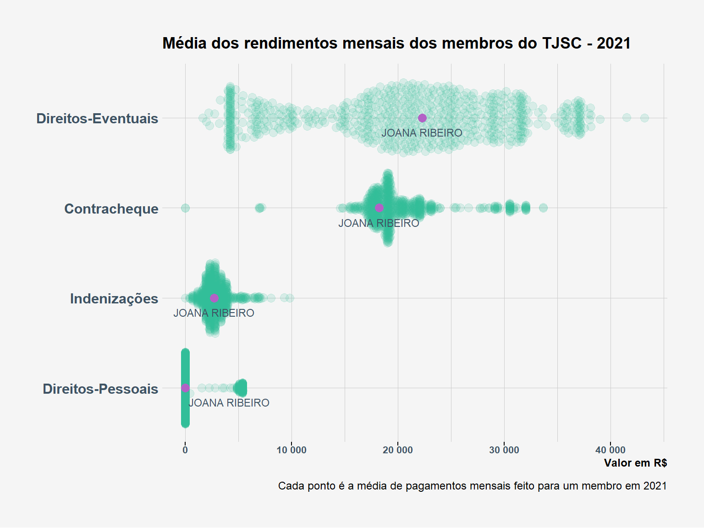
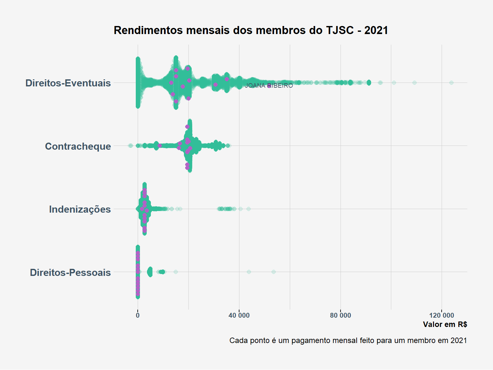
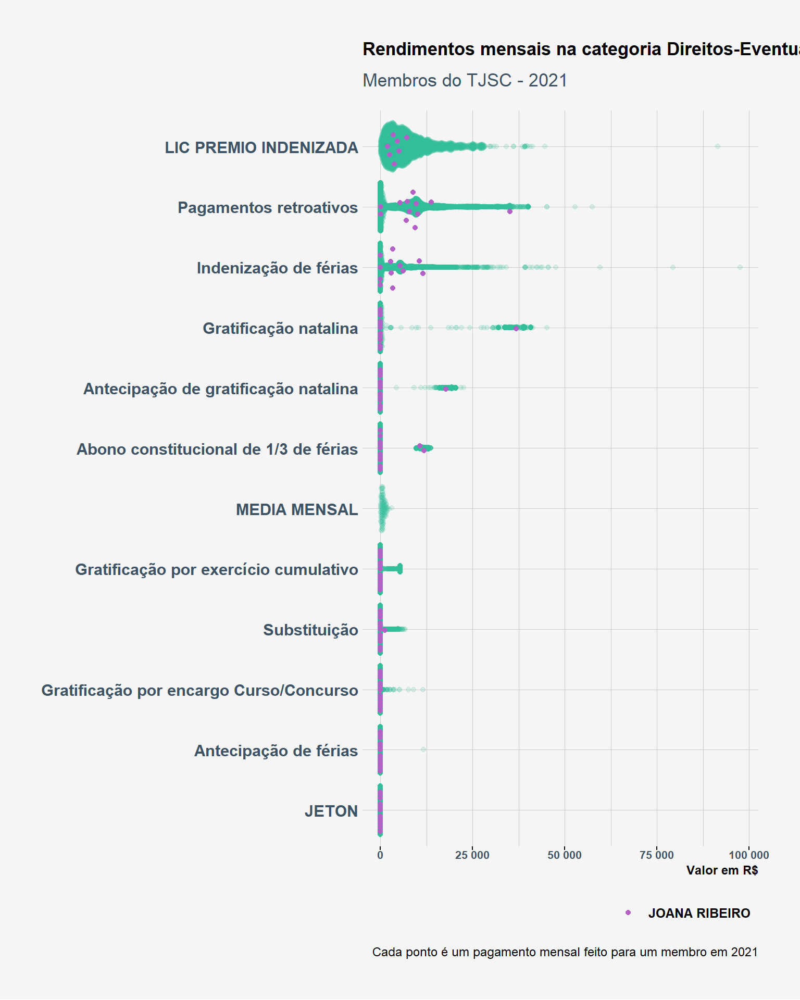
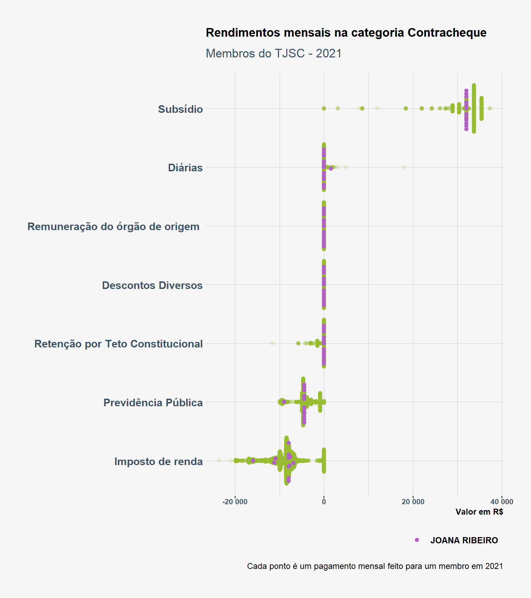
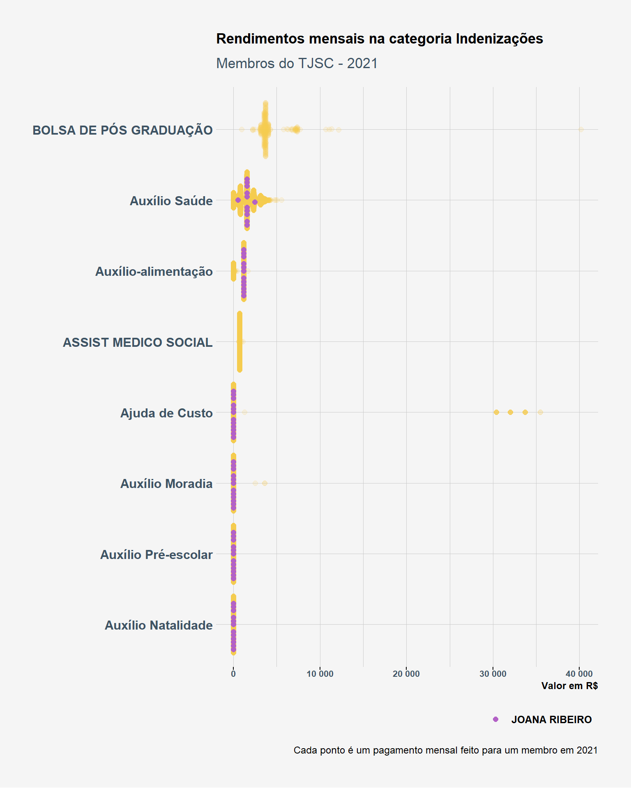

Tribunal de Justiça de Santa Catarina
Bibliotecas
Estilização de gráficos
Código
# peguei as cores do site e criei um vetor com nomes fáceis de lembrar
cores_dadosjusbr <- c(
lilas = "#B361C6",
cyan = "#2FBB96",
cinza_azulado = "#3e5363",
verde = "#96ba2f",
laranja = "#F2C94C",
cinza_claro = "#F5F5F5"
)
hrbrthemes::import_roboto_condensed()
extrafont::loadfonts()
theme_set(
hrbrthemes::theme_ipsum_rc() +
theme(
axis.ticks.x = element_line(),
plot.title = element_text(color = "black", face = "bold", size = 13),
plot.subtitle = element_text(color = cores_dadosjusbr[["cinza_azulado"]]),
plot.background = element_rect(fill = cores_dadosjusbr[["cinza_claro"]], color = "transparent"),
axis.text.x = element_text(color = cores_dadosjusbr[["cinza_azulado"]], size = 8, face = "bold"),
axis.text.y = element_text(color = cores_dadosjusbr[["cinza_azulado"]], face = "bold"),
axis.title.x = element_text(color = "black", face = "bold"),
axis.title.y = element_text(color = "black", face = "bold"),
legend.text = element_text(color = "black", face = "bold"),
legend.title = element_text(color = "black", face = "bold"),
strip.text = element_text(color = cores_dadosjusbr[["cinza_azulado"]], face = "bold"),
panel.background = element_blank(),
text = element_text(family = "Roboto Condensed")
)
)
hrbrthemes::update_geom_font_defaults(color = cores_dadosjusbr[["cinza_azulado"]],
family = "Roboto Condensed")Leitura do pacote de dados
A leitura dos dados é feita com frictionless::read_package
Código
# read from zip
read_dadosjus <- function(pkgURL, myDir) {
pkgDest <- str_extract(pkgURL, "(?<=datapackage\\/).*")
pkgDir <- str_remove(pkgDest, "\\/.*$")
pkgDest <- here(myDir, pkgDest)
pkgDir <- here(myDir, pkgDir)
dir.create(pkgDir, recursive = TRUE)
message(str_glue("get {pkgURL}\n\n"))
download.file(pkgURL, mode = "wb", destfile = pkgDest)
Sys.sleep(2)
message(str_glue("unzip {pkgDest} to {pkgDir}\n\n"))
unzip(pkgDest, exdir = pkgDir)
Sys.sleep(2)
# leitura do pacote
message("read DadosJusBr datapackage\n")
package <- frictionless::read_package(here(pkgDir, 'datapackage.json'))
unlink(here("R/data"), recursive = TRUE)
return(package)
}
# URL package
pkgURL <- "https://dadosjusbr.org/download/datapackage/tjsc/tjsc-2021.zip"
# read datapackage
datapackage_tjsc <- read_dadosjus(pkgURL = pkgURL, myDir = "data/pacotes")
#> Warning in dir.create(pkgDir, recursive = TRUE): 'C:
#> \Users\rauld\Documents\acompanhamento-dados\data\pacotes\tjsc' já existe
#> get https://dadosjusbr.org/download/datapackage/tjsc/tjsc-2021.zip
#> unzip C:/Users/rauld/Documents/acompanhamento-dados/data/pacotes/tjsc/tjsc-2021.zip to C:/Users/rauld/Documents/acompanhamento-dados/data/pacotes/tjsc
#> read DadosJusBr datapackage
#> Please make sure you have the right to access data from this Data Package for your intended use.
#> Follow applicable norms or requirements to credit the dataset and its authors.inspeciona listando data resources
Código
# List resources
frictionless::resources(datapackage_tjsc)
#> [1] "coleta" "contra_cheque" "remuneracao" "metadados"dataset de remunerações
Para extrair o dataset de remunerações basta ler o data resource com frictionless::read_resource("remuneracao")
Código
remuneracao <- datapackage_tjsc %>%
frictionless::read_resource("remuneracao") %>%
filter(!is.na(valor))dataset de contra-cheques
Para extrair o dataset de contra-cheques basta ler o data resource com frictionless::read_resource("rcontra_cheque")
Código
contra_cheque <- datapackage_tjsc %>%
frictionless::read_resource("contra_cheque") %>%
filter(!is.na(ativo))join contra-cheques com remuneração
Código
left_join <- tidylog::left_join
base_tjsc <- left_join(remuneracao, contra_cheque) %>%
mutate(data = lubridate::dmy(str_replace(chave_coleta, "tjsc", "01"))) %>%
select(data, natureza, categoria, item, nome, valor)
#> Joining, by = c("id_contra_cheque", "chave_coleta")
#> left_join: added 6 columns (nome, matricula, funcao, local_trabalho, tipo, …)
#> > rows only in x 0
#> > rows only in y ( 0)
#> > matched rows 203,366
#> > =========
#> > rows total 203,366Objetivo da análise
Comparar os rendimentos da juíza Joana Ribeiro Zimmer com o rendimento dos demais magistrados do TJSC. A juíza ficou conhecida por impedir o aborto legal de uma criança que sofreu violência sexual e estava com 22 semanas de gestação. O caso foi revelado por uma matéria do The Intercept Brasil.
Código
# filtrando por magistradas que contenham "JOANA" no primeiro nome
base_tjsc %>%
filter(str_detect(nome, "JOANA")) %>%
distinct(nome)
#> # A tibble: 1 × 1
#> nome
#> <chr>
#> 1 JOANA RIBEIROAnálise
Distribuição dos rendimentos dos membros do TJSC por categoria
Média dos rendimentos mensais
Código
base_tjsc %>%
count(data, categoria, nome, wt = valor, name = "valor") %>%
group_by(categoria, nome) %>%
summarise(valor = mean(valor), .groups = "drop") %>%
mutate(is_joana_ribeiro_zimmer = if_else(nome == "JOANA RIBEIRO", "JOANA RIBEIRO", "Demais magistrados (TJSC)"),
categoria = str_to_title(categoria)) %>%
ggplot(aes(y = reorder(categoria, valor), x = valor, color = is_joana_ribeiro_zimmer)) +
ggbeeswarm::geom_quasirandom(groupOnX = FALSE, size = 3) +
scale_color_manual(values = cores_dadosjusbr[["lilas"]]) +
gghighlight::gghighlight(
is_joana_ribeiro_zimmer == "JOANA RIBEIRO",
unhighlighted_colour = alpha(cores_dadosjusbr[["cyan"]], .15),
label_params = list(size = 3,
label.padding = unit(0.01, "lines"),
label.size = NA, fill = "transparent", hjust = 0.5, vjust = 0, color = cores_dadosjusbr[["cinza_azulado"]])
) +
scale_x_continuous(label = scales::number) +
labs(
title = "Média dos rendimentos mensais dos membros do TJSC - 2021",
x = "Valor em R$",
y = NULL,
caption = "Cada ponto é a média de pagamentos mensais feito para um membro em 2021"
)
Rendimentos mensais
Código
base_tjsc %>%
count(data, categoria, nome, wt = valor, name = "valor") %>%
group_by(data, categoria, nome) %>%
summarise(valor = mean(valor), .groups = "drop") %>%
mutate(is_joana_ribeiro_zimmer = if_else(nome == "JOANA RIBEIRO", "JOANA RIBEIRO", "Demais magistrados (TJSC)"),
categoria = str_to_title(categoria)) %>%
ggplot(aes(y = reorder(categoria, valor), x = valor, color = is_joana_ribeiro_zimmer)) +
ggbeeswarm::geom_quasirandom(groupOnX = FALSE, size = 2) +
scale_color_manual(values = cores_dadosjusbr[["lilas"]]) +
gghighlight::gghighlight(
is_joana_ribeiro_zimmer == "JOANA RIBEIRO",
unhighlighted_colour = alpha(cores_dadosjusbr[["cyan"]], .15),
label_params = list(size = 3,
label.padding = unit(0.01, "lines"),
label.size = NA, fill = "transparent", hjust = 0.5, vjust = 0, color = cores_dadosjusbr[["cinza_azulado"]])
) +
geom_text(data = . %>% filter(categoria == "Direitos-Eventuais", lubridate::month(data) == 11),
color = cores_dadosjusbr[["cinza_azulado"]],
aes(label = nome), size = 2.5, vjust = 1) +
scale_x_continuous(label = scales::number) +
labs(
title = "Rendimentos mensais dos membros do TJSC - 2021",
x = "Valor em R$",
y = NULL,
caption = "Cada ponto é um pagamento mensal feito para um membro em 2021"
)
Distribuição dos rendimentos dos membros do TJSC por item da categoria
Código
plot_rendimentos <- function(df, categ) {
cor_pontos <- case_when(
categ == "Direitos-Eventuais" ~ cores_dadosjusbr[["cyan"]],
categ == "Indenizações" ~ cores_dadosjusbr[["laranja"]],
categ == "Contracheque" ~ cores_dadosjusbr[["verde"]],
categ == "Direitos-Pessoais" ~ cores_dadosjusbr[["cinza_azulado"]]
)
size_categ <- case_when(
categ == "Direitos-Eventuais" ~ 1.5,
categ == "Indenizações" ~ 2,
categ == "Contracheque" ~ 1.7,
categ == "Direitos-Pessoais" ~ 2
)
df %>%
mutate(categoria = str_to_title(categoria)) %>%
filter(categoria == categ) %>%
count(data, categoria, item, nome, wt = valor, name = "valor") %>%
group_by(data, categoria, item, nome) %>%
summarise(valor = mean(valor), .groups = "drop") %>%
mutate(is_joana_ribeiro_zimmer = if_else(nome == "JOANA RIBEIRO", "JOANA RIBEIRO", "Demais magistrados (TJSC)")) %>%
ggplot(aes(y = reorder(item, valor), x = valor, color = is_joana_ribeiro_zimmer)) +
ggbeeswarm::geom_quasirandom(groupOnX = FALSE, size = size_categ) +
scale_color_manual(values = cores_dadosjusbr[["lilas"]]) +
gghighlight::gghighlight(
is_joana_ribeiro_zimmer == "JOANA RIBEIRO",
unhighlighted_colour = alpha(cor_pontos, .15), use_direct_label = FALSE,
label_params = list(size = 3,
label.padding = unit(0.01, "lines"),
label.size = NA, fill = "transparent", hjust = 0.5, vjust = 0,
color = cores_dadosjusbr[["cinza_azulado"]])
) +
scale_x_continuous(label = scales::number) +
labs(
title = str_glue("Rendimentos mensais na categoria {categ}"),
subtitle = "Membros do TJSC - 2021",
x = "Valor em R$",
y = NULL,
caption = "Cada ponto é um pagamento mensal feito para um membro em 2021",
color = NULL
) +
theme(legend.position = "bottom", legend.justification = "right")
}Direitos eventuais
Código
plot_rendimentos(base_tjsc, "Direitos-Eventuais")
Contracheque
Código
plot_rendimentos(base_tjsc, "Contracheque")
Indenizações
Código
plot_rendimentos(base_tjsc, "Indenizações")